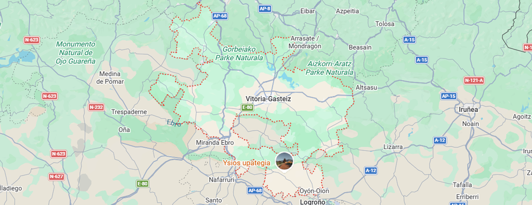
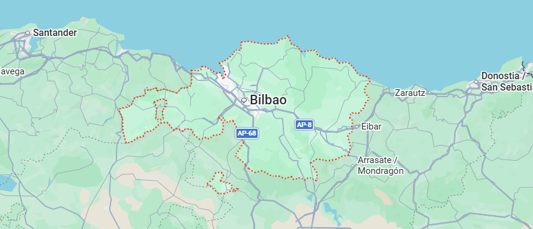
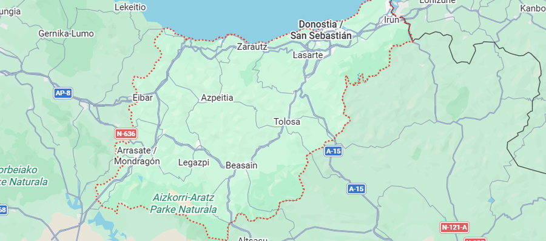
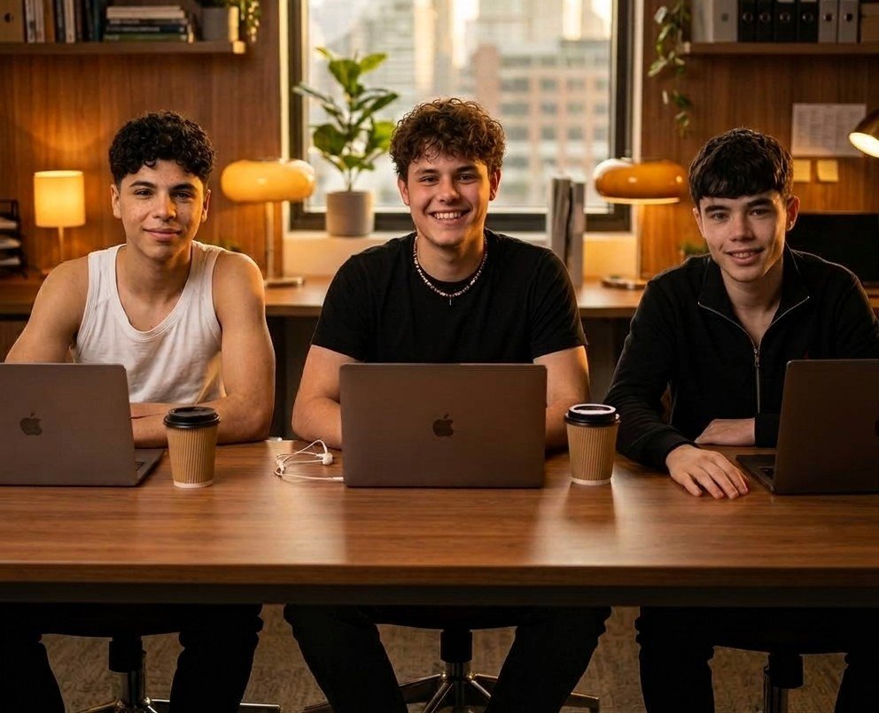
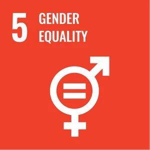
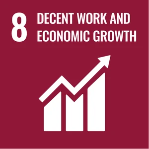
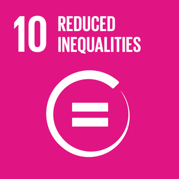

Curriculuma igo, eta minutu gutxitan nire ikasketekin bat zetozen eskaintzak jaso nituen.
Ikaslea 1
Ikaslea
Iritziak
Adibide fikziozko testigantzak dira, ez benetako iritziak.
Curriculuma igo, eta minutu gutxitan nire ikasketekin bat zetozen eskaintzak jaso nituen.
Ikaslea 1
Ikaslea
Kokapena aukeratzeak asko erraztu zidan etxetik gertu praktikak aurkitzea.
Ikaslea 2
Ikaslea
Ikasle guztien eskaerak toki bakar batean jarraitzeak denbora asko aurrezten dit.
Irakaslea 1
Irakaslea
Agenteak proposatutako eskaintzak erabilgarriak dira eta nire taldearen profilei egokitzen zaizkie.
Irakaslea 2
Irakaslea
Enpresekin koordinatzeko panel orokorra eta txostenak oso lagungarriak dira.
Ikastetxea 1
Ikastetxea
Hitzarmenei esker, gure ikasleek aukera gehiago dituzte lurralde guztietan.
Ikastetxea 2
Ikastetxea
Zerbitzuak
Praktikak bilatzeko bi bide eskaintzen ditugu.
PRAKTIPek Euskadiko enpresekin dituen hitzarmenen bidez, ikasleei praktikak lortzen laguntzen die.



Zure curriculuma, ikasketak eta kokapen geografikoa zehaztuko dituzu, eta agenteak praktikak bilatzeko prozesua erraztuko du.
urratsa 1: Igo zure curriculuma.
Curriculum dokumentuaren irudia edo ikonoa.
urratsa 2: Zehaztu zure bilaketa.
Aukeratu kokapen geografikoa eta egiten ari zaren FP edo unibertsitate-ikasketak.
urratsa 3: Utzi agente adimendunari lan egiten.
Agenteak praktikak bilatu, aukera egokiak aztertu eta zure curriculumaren informazioan oinarritutako mezu pertsonalizatu bat prestatzen du.
Gure istorioa
PRAKTIP ikasenpresa bat da, eta haren helburua Lanbide Heziketako ikasleen eta praktikak eskaintzen dituzten enpresen arteko bitartekaritza egitea da. PRAKTIPek praktikak bilatzeko bi bide eskaintzen ditu: adimen artifizialeko agenteen bidezko bilaketa eta hautaketa, eta enpresekin zuzenean egindako hitzarmen eta kontratuen bidezko lankidetza.
Gure zerbitzua hiru erabiltzaile motari zuzentzen zaie:
Horren bidez, bilaketa-prozesua errazten dugu, eskaintzak eta hautagaiak hobeto lotzen ditugu, eta ikasleen lan-munduratzea sustatzen dugu.

GJH · ODS
Garapen Jasangarrirako Helburuen (GJH) artetik hiru aukeratu ditugu, PRAKTIPen eragin sozial eta ekonomikoarekin bat datozenak.

5. GJH
Praktikak eskuratzeko aukera berdinak eta hautaketa-irizpideetan genero-alborapenik ez izatea.
PRAKTIPek ikasle guztiei praktikak eskuratzeko aukera berdinak eskaini nahi dizkie, generoa edozein dela ere. Eskaintzak zabaltzeko eta hautagaiak gomendatzeko irizpideek ez dute generoagatiko bereizketarik eragin behar. Adimen artifizialeko agenteek irizpide objektiboak eta lanpostuarekin lotutako gaitasunak lehenetsi behar dituzte.

8. GJH
Kalitatezko praktikak sustatzea eta enpresei talentu berria aurkitzen laguntzea.
PRAKTIPek enpresen eta ikasleen arteko harremana errazten du, ikasleei prestakuntzarekin lotutako lan-esperientzia lortzen lagunduz. Praktikak kalitatezkoak, seguruak eta ikaskuntza-helburuekin bat datozenak izatea sustatu nahi da.

10. GJH
Ikasle eta ikastetxe guztiei zerbitzua eskuragarri jartzea, haien egoera eta beharrak kontuan hartuta.
PRAKTIPen bidez, praktikak aurkitzeko zailtasun handiagoak izan ditzaketen ikasleei aukerak hurbildu nahi zaizkie. Informaziorako eta praktiketarako sarbidea erraztu nahi da, irisgarritasuna eta tratu-berdintasuna kontuan hartuz.
Harpidetzak
Garrantzitsua: prezioak eta salmenta-zifrak hipotetikoak eta orientagarriak dira. Simulazioak dira, ez benetako salmentak edo egiaztatutako aurreikuspen ekonomikoak.
PRAKTIPen eredu ekonomikoa urteko harpidetza-planetan oinarritzen da. Harpidetza guztiak urtekoak dira: prezioa urtean behin kobratzen da, harpidetza hasten denean, eta urtero berritzen da.
19,88 € / urtea (hipotetikoa)
99,88 € / urtea (hipotetikoa)
588,88 € / urtea (hipotetikoa)
| Adierazlea | 1. urtea | 2. urtea |
|---|---|---|
| Alta berriak guztira | 216 | 505 |
| Berritzeak guztira | 0 | 163 |
| Bajak guztira | 0 | 53 |
| Bezero aktiboak (Ikaslea / Irakaslea / Ikastetxea) | 190 / 21 / 5 | 591 / 64 / 13 |
| Fakturazioa plan bakoitzeko (Ikaslea / Irakaslea / Ikastetxea) | 3.777,20 € / 2.097,48 € / 2.944,40 € | 11.749,08 € / 6.392,32 € / 7.655,44 € |
| Urteko diru-sarrera errepikaria (ARR) itxieran | 8.819,08 € | 25.796,84 € |
2. urtean, iraungitako 216 harpidetzetatik 163 berritu dira (%75,5eko berritze-tasa simulatua).
| Unea | Bezero aktiboak guztira | Fakturazio metatua |
|---|---|---|
| 6. hilabetea | 89 | 3.627,32 € |
| 12. hilabetea | 216 | 8.819,08 € |
| 18. hilabetea | 428 | 20.456,96 € |
| 24. hilabetea | 668 | 34.615,92 € |
Kontaktua
Zalantzaren bat duzu? Idatzi iezaguzu eta lehenbailehen erantzungo dizugu.